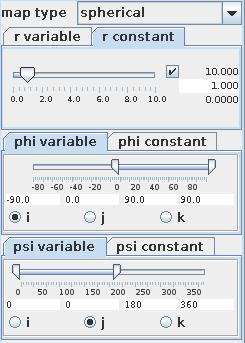
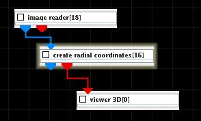
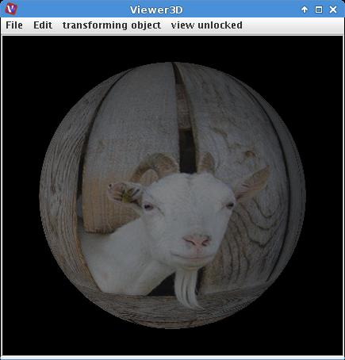

|
|
|

maps field to radial coordinates
| input port | type | description | data acceptors |
|---|---|---|---|
| inField | VNRegularField | Regular Field 2D with affine geometry Regular Field 3D with affine geometry |
|
| output port | type | description | data schemas |
| outField | VNRegularField | Regular Field 3D with explicit coordinates Regular Field 2D with explicit coordinates |
|
| outObj | VNGeometryObject |
CREATE RADIAL COORDINATES
The module maps a field to spherical or cylindrical coordinates.
Input field
The input field is regular 2D or 3D with affine geometry.
Output field
The output field is regular 2D or 3D with explicit coordinates. A geometry object of the field is generated.
Computation parameters
The user defines a mapping of the range of geometrical parameters i, j, k of the input data onto the range of the new coordinate variables for either spherical (r, phi, psi) or cylindrical (r, phi, z) coordinates. The value of the field is then mapped onto its new location:
for spherical coordinates:
x = r cos phi cos psi, y = r cos phi sin psi, z = r sin phi
for cylindrical coordinates:
x = r cos phi, y = r sin phi, z = z.

The map type drop down list defines the type of coordinates as spherical or cylindrical.
Each new coordinate variable can be defined as variable or constant by choosing the appropriate tab.
In the constant case the user defines a constant value for this variable using either the slider or the text fields for minimum, maximum and current value on the right hand side of the slider, if the check box is on.
In the variable case the user chooses the variable of the input field which has to be mapped onto the new variable using the radio button menu. He also defines the mapping of the original coordinate variable range onto the new variable range using either the smart slider or the text fields below to adjust minimum and maximum value of the new range.
Presentation parameters
Presentation parameters are described in the common interfaces section under the Presentation Panel entry.
Example

Choose the Image reader module from the regular data readers library and move it into the work space. Choose any image file using the browser. Choose create radial coordinates module from the geometry filters library. In the computation GUI choose a value for r constant. Map j variable onto the whole range of phi variable and i variable onto the whole range of psi variable.
